23 поездки с февраля 2022 года, в них 81 регион — без Москвы и Подмосковья: это дом, отсюда поездки начинаются. Самая длинная — 20 дней, 4–23 июля 2022. Поездки — по годам, регионы в каждой — по маршруту.
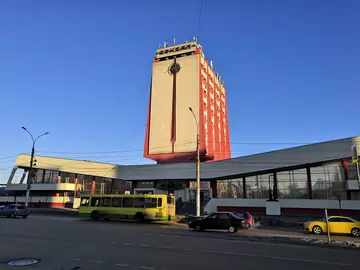
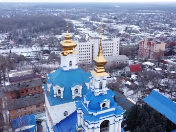
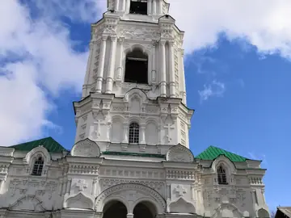
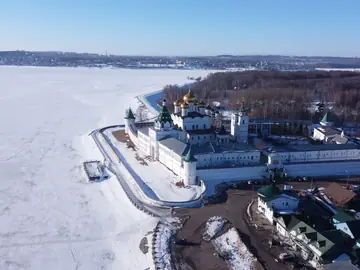
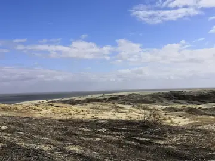
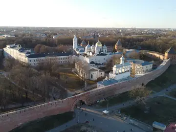
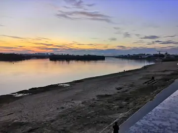
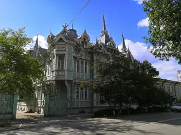
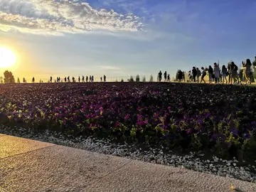
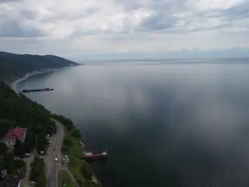
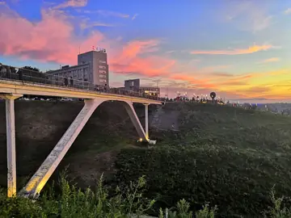
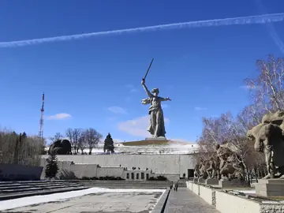
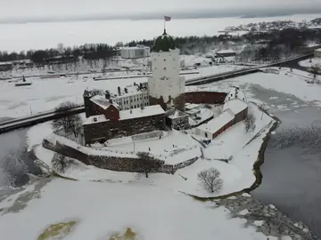
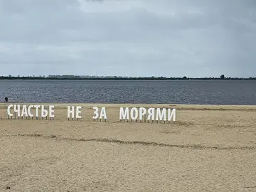
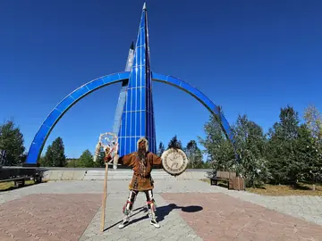
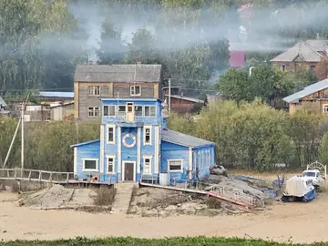
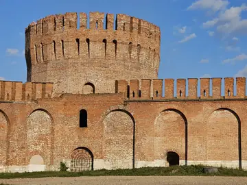
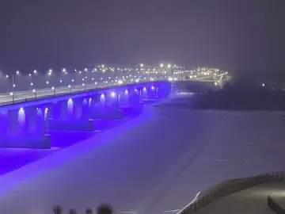
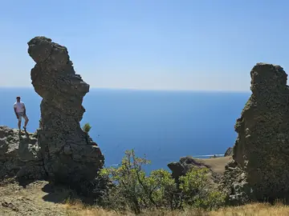
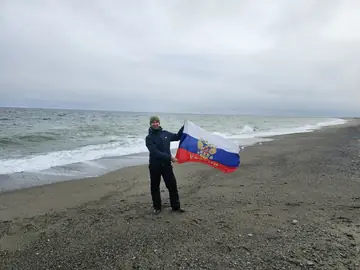